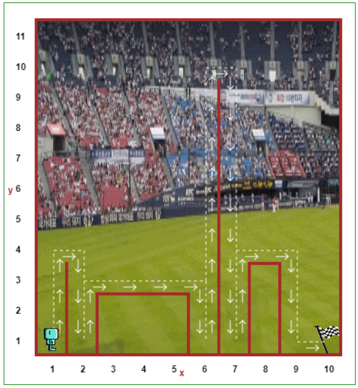
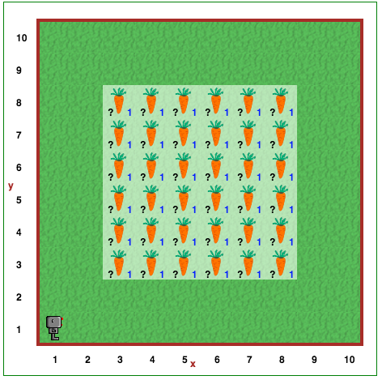

1. Reeborg Review¶
CS20-CP1 Apply various problem-solving strategies to solve programming problems throughout Computer Science 20.
CS20-CP2 Use common coding techniques to enhance code elegance and troubleshoot errors throughout Computer Science 20.
CS20-FP2 Investigate how control structures affect program flow.
CS20-FP3 Construct and utilize functions to create reusable pieces of code.
To confirm that you understand the major concepts we learned from our Reeborg unit, try the following without looking back at any previous code!
1.1. Question 1 - Apple Pie¶
Reeborg must walk around the outside of the world, collecting all the apples so that it can make apple pie when it gets home.
Try to make your code as short as possible using for/repeat loops.
Beware! The apples keep changing locations each time you reload this world.
Open the Apple Pie world and create a solution to this problem!

1.2. Question 2 - Go To Origin¶
Define a new function called go_to_origin that sends Reeborg to the bottom left corner of the screen (south-west corner), regardless of its initial location or the direction it is initially facing. Assume that there are no wall sections present.
Hint: Use the south and west boundary walls as guides.
Open the Go To Origin Review world and create a solution to this problem!

1.3. Question 3 - Hurdle Jumping¶
Reeborg is jumping hurdles again. This time, the hurdles can be of any height, and of any width. Reeborg needs to keep jumping over them until it gets to the flag.
Open the Hurdle Jump Review World and create a solution to this problem!
1.4. Question 4 - Planting Time¶
Reeborg has planted carrot seeds in the garden, but the carrots are growing unevenly. At some places, no carrots have grown; at others, many carrots are growing.
Have Reeborg remove the excess carrots and plant new ones where there is none so that there is only one carrot at each location. Reeborg already carries enough carrots (seeds) to replant the entire garden if needed.
You might find it convenient to define a function named fix_one_row, then call the function 6 times.
Open the Planting Time world and create a solution to this problem!
